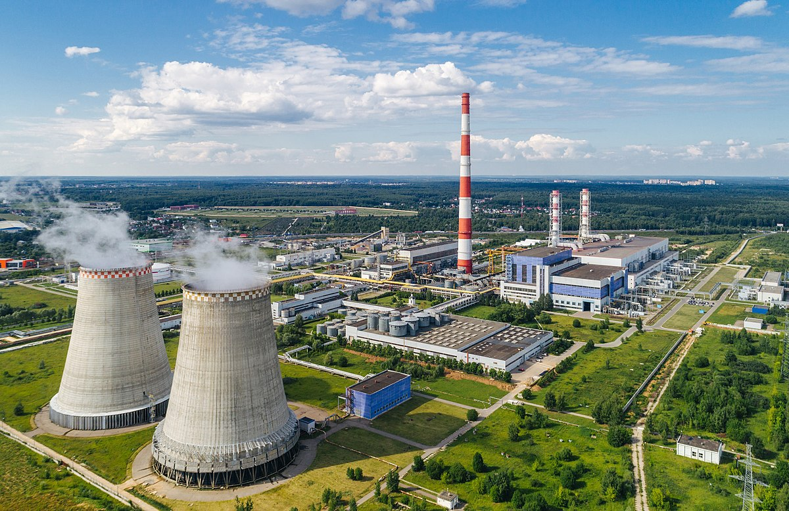
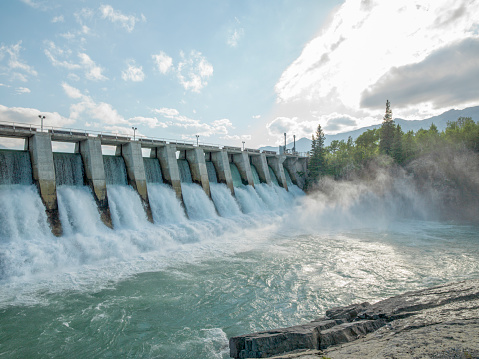
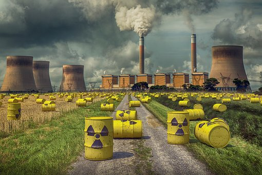
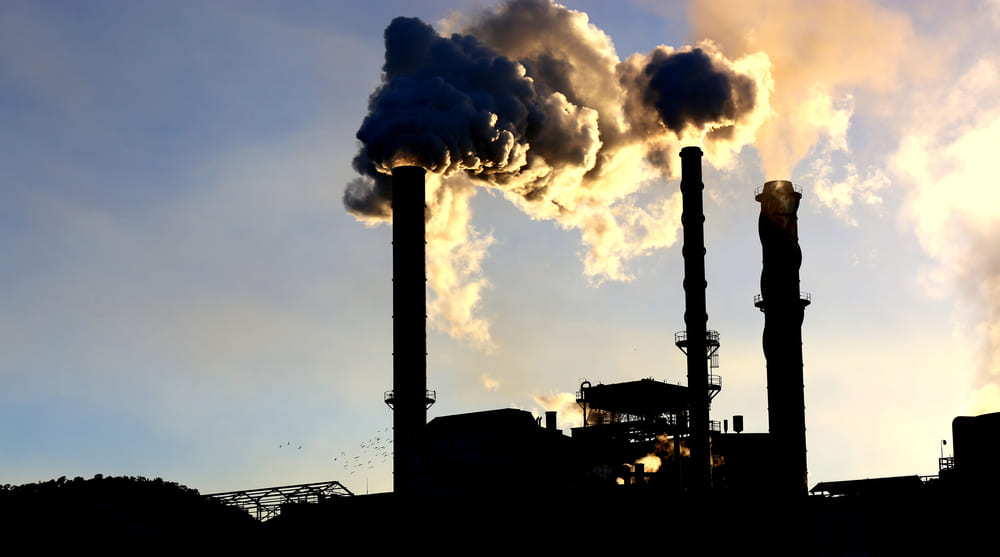

Thermal Electricity Plant
Thermal power plants, also known as fossil fuel power plants, are a significant source of electricity production globally. These power plants generate electricity by burning fossil fuels, such as coal, natural gas, and oil, to produce heat, which is then used to generate steam and drive turbines that produce electricity. However, thermal power plants are associated with environmental concerns, including greenhouse gas emissions, air pollution, and waste disposal.
Hydroelectric power Plant
Hydropower, which involves generating electricity by harnessing the kinetic and potential energy of moving water, is one of the oldest and most widely used forms of renewable energy. It accounts for a significant portion of global electricity production.Hydropower is a significant source of electricity production worldwide, accounting for a substantial portion of global electricity generation. It has both benefits and challenges, and its future outlook will depend on various factors, including technological advancements, environmental considerations, and social impacts.
Nuclear power Plant
 Nuclear power plants generate electricity through a process called nuclear fission, which involves splitting atoms of radioactive materials, such as uranium or plutonium, in a controlled manner. The heat produced from the nuclear fission reactions is used to generate steam, which drives turbines to generate electricity.
Renewable energy
 Renewable energy sources, such as solar, wind, hydropower, biomass, and geothermal, are gaining increasing prominence in the global electricity production mix. These sources are considered sustainable as they are naturally replenished and have lower or no greenhouse gas emissions. Many countries have been investing in renewable energy infrastructure and implementing policies to promote their adoption in order to reduce carbon emissions and mitigate climate change.
Renewable energy sources, such as solar, wind, hydropower, biomass, and geothermal, are gaining increasing prominence in the global electricity production mix. These sources are considered sustainable as they are naturally replenished and have lower or no greenhouse gas emissions. Many countries have been investing in renewable energy infrastructure and implementing policies to promote their adoption in order to reduce carbon emissions and mitigate climate change.
Non-renewable sources
Historically, fossil fuels such as coal, natural gas, and oil have been the dominant sources of electricity production worldwide. These fuels are burned to generate heat, which is then used to produce steam to drive turbines and generate electricity. However, the use of fossil fuels has raised concerns about environmental pollution, greenhouse gas emissions, and their contribution to climate change.